- 内容 Contents
- 图像 Images
- 插图 Illustrations
- 链接 Links
- 文本 Text
- 符号 Symbols
- 媒体 Media
图像 Images
- 使用动态选项卡 "图片工具" → "图片格式"编辑图片
- 图片 Pictures
- 屏幕截图 Screenshot
- 推荐使用 Snipaste
- 相册 Photo Album
- 快速生成相册
- 相册会重新创建一个 PPT 文档
插图 Illustrations
- 形状 Shapes
- 插入基本形状
- 选择某个形状，会激活"形状格式"动态选项卡，实现更多操作
1. 顶点编辑 Edit Shape
2. 合并形状 Merge Shapes
- 选择2个或多个形状会触发
- 也叫矢量运算
- 根据先选择的对象为参考对象进行矢量运算；以下示例都是先选择绿色矩形再选择黄色椭圆
- 强烈推荐好好掌握！！！
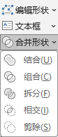
矢量运算
- 合并形状
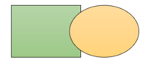
原始状态
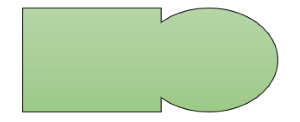
结合 Union
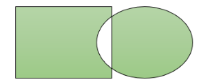
组合 Combine
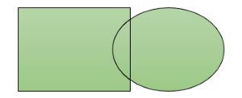
拆分 Fragment
相交 Intersect
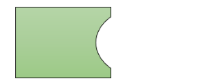
剪除 Subtract
为对象指定背景填充也可以实现一定的运算效果
- 图标 Icons
- 修饰使用
- 个人感觉拉取速度比较慢
- 高版本支持
- 智能艺术字 SmartArt
- 图表 Chart
链接 Links
- 缩放定位 Zoom
- 新版本功能
- 利用丝滑的缩放效果实现到节、到幻灯片的跳转
- 指定元素创建缩放定位后，会创建一个新的元素，默认是目标幻灯片的缩略图；且跳转过去后，不返回，从当前开始继续顺序播放
- 在缩放的动态选项卡中，可以修改为喜欢的图片，还可以指定返回
- 链接 Link
- 文档内部和外部的链接，同 Word
1. 跳转到文档内的某张幻灯片
- 不同的是，Word 中的书签可以指定任何位置、任何元素；PPT 的书签不能单独创建，而是指的已经创建好的某一张幻灯片
- 所有选择"书签"或"本文档种的位置"都可以插入超链接
- 超链接：PPT 中的“本文档中的位置”链接，实际上就是“跳转到第 X 张幻灯片”
2. 跳转到外部网页（URL）
3. 跳转到其他文件或发送邮件
- 屏幕提示：设置提示信息；当幻灯片播放时，鼠标悬停在幻灯片上给出超链接信息
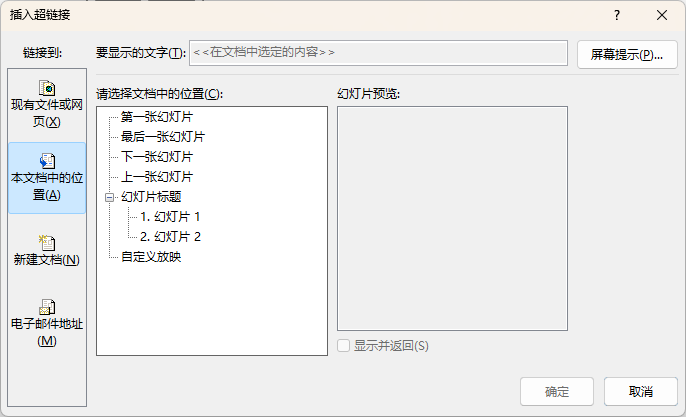
本文档中的位置/书签
- 动作 Action
- 根据鼠标动作触发幻灯片的行为
- 鼠标单击、鼠标悬停两种触发方式
- 运行程序：可以直接打开电脑上的软件（比如点击按钮打开计算器、播放视频）
- 运行宏：执行一段 VBA 代码
- 播放声音：点击或悬停时播放特定的音效（如“鼓掌”或“爆炸声”）
- 对象动作：控制嵌入的 OLE 对象（如编辑或打开嵌入的 Excel 表格）
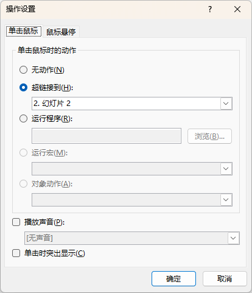
动作
超链接更侧重于“连接”（跳转到哪里）
动作设置更侧重于“交互”（做什么反应）
文本 Text
- 文本框 Text Box
- 横排文本框、竖排文本框
- 如果使用了特定字体，请在"文件" → "更多" → "选项" → "保存"，将字体嵌入文件
- 页眉页脚 Header&Footer、日期时间 Date&Time、幻灯片编号 Slide Number
- 这三个使用同一个对话框设置
- 可以只在当前幻灯片插入，也可以应用到所有幻灯片
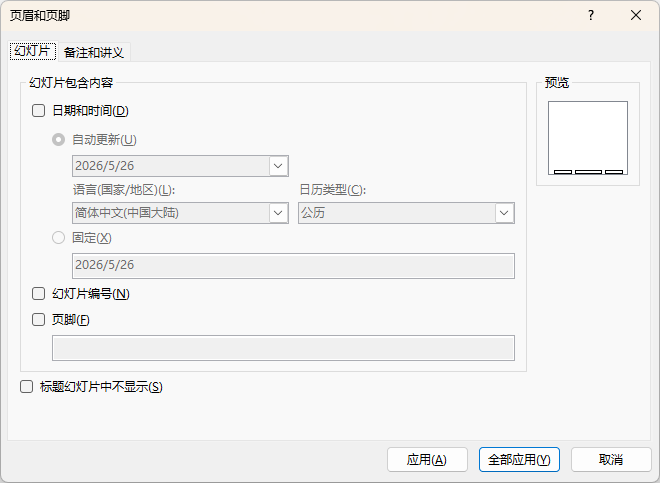
页眉页脚、日期、幻灯片编号
- 艺术字 WordArt
- 对象 Object
符号 Symbols
- 公式 Equation
- 符号 Symbol
媒体 Media
- 视频 Video
- 音频 Audio
- 录制屏幕 Screen Recording
- 微课比赛、录制 VIP 课程
- 仅仅是录制屏幕，不能录制其中的使用
- 更多使用吗，请访问 录制
练习 Drill
图片 - 照片打印
- 根据提供的1寸照片素材，使用背景图片平铺填充实现
- 1寸标准大小为2.5cm×3.5cm
素材1
素材2
- 注意组合时，不要遗漏形状
- 也可以拖动鼠标全选后再组合
- 大小尽量使用整数
- 拆分
- 组合
- 拆分
- 组合
图形设计
文字 - 彩虹字
导航页设计
单击导航页内的菜单跳转到对应的内容页
- 插入一张幻灯片作为导航页
- 插入若干文本框并输入文案
- 按照设计排列对齐
- 分别插入超链接跳转到对应的目标幻灯片
- 各目标幻灯片插入按钮，添加动作，单击返回导航页
- 播放查看导航效果
参考效果1
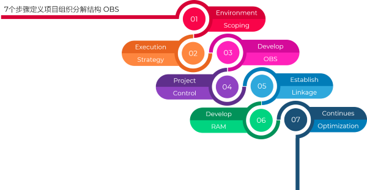
参考效果2
参考效果3
 参考效果4
参考效果4
 参考效果5
参考效果6
参考效果5
参考效果6
首页设计
- 文字的转换效果
- 形状
- 插入文本框
- 输入多个短划线 -
- 动态选项卡"绘图工具" → 形状格式 → 艺术字样式 → 文本效果 → 转换 → 朝鲜鼓
- 调整大小
- 对齐幻灯片水平、垂直居中
- 插入任意形状 → 先选择文本框再选择图形 → 合并形状 → 剪除，将文本转化为普通形状
- 为转换后的形状指定背景填充 - 使用图片
- 插入其它元素并调整，完成设计
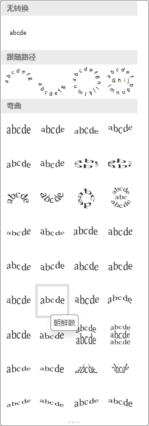
朝鲜鼓
背景填充时，勾选"将图片平铺为纹理"可以避免变形
视频 - 首屏设计
- 使用视频作为首屏背景
- 开始：自动播放
- ✓ 全屏播放
- ✓ 循环播放，直到停止
音频 - 背景音乐
- 开始：自动播放
- ✓ 跨幻灯片播放
- ✓ 循环播放，直到停止
- ✓ 放映时隐藏